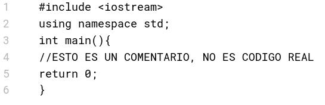

lección 3
estructura del código en c++
Los lenguajes de programación siguen una sintaxis precisa para ejecutarse correctamente, y en lenguajes como C++ se requiere una estructura con la que tener los cimientos de un algoritmo.
Esta estructura consiste en las líneas de código que se desarrollan a continuación:

- #include <iostream>
Esta instrucción llama a un conjunto de funciones llamado librería; iostream es la librería que permite la entrada y salida de datos, por medio de una terminal (texto plano). TODA LIBRERÍA A SER UTILIZADA DEBE SER INCLUIDA
- using namespace std;
namespace std es un atajo para omitir la escritura del prefijo o namespace std::, que es muy recurrente al aprender a escribir código. Sin embargo, en proyectos avanzados no es recomendable.
- int main(){}
Esta es la estructura de una función, para ser precisos la función principal. Todo el código de C++ tiene la función main como punto de partida al ejecutar un código.
- Comentarios //
Las líneas que llevan // no fungen como instrucciones reales, son comentarios que sirven para tener notas sobre el código.
- return 0;
El comando return llama a terminar la función y devolver un número como código de salida, generalmente 0 para indicar que no hubo errores en el programa.
A partir de esta base se pueden crear algoritmos que trabajan con la entrada y salida de datos entre el usuario y el algoritmo de la computadora.
Esto se puede modificar de distintas maneras. Por ejemplo, agregando más librerías con más funciones que se requieran; como string, vector, math, entre otras; o bien, eliminando el atajo para el prefijo std::, si así se prefiere. El comando return puede ser omitido (lo cual hace que devuelva 0 por defecto) o hacer que devuelva un número diferente a 0.
La única parte que debe escribirse forzosamente es la función principal, ya que sin ella, C++ no tiene un punto por donde comenzar a ejecutarse.